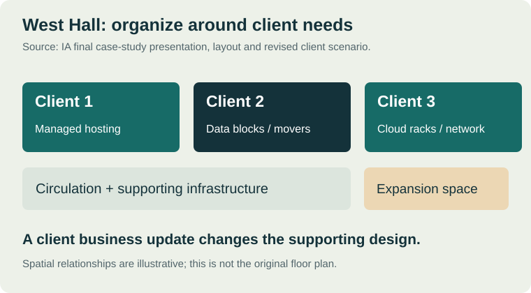
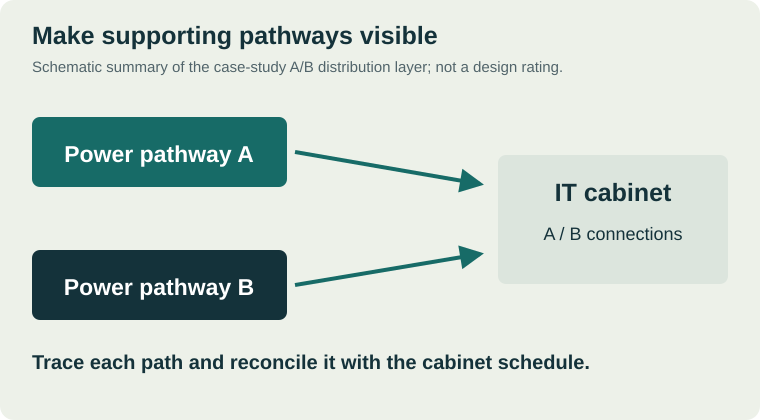
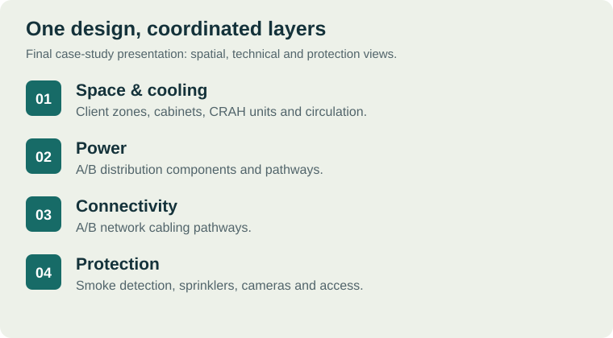

Translate business requirements
Develop cabinet and infrastructure arrangements around client needs, service boundaries and expansion.
Turn requirements into an integrated design.
Certified Data Centre Design Professional training brought together spatial planning, power, cooling, connectivity, life safety and commissioning through an applied data-center design case.
Explore the learning ↓Develop cabinet and infrastructure arrangements around client needs, service boundaries and expansion.
Reconcile cooling, power, cabling, access and life safety within the same physical space.
Use the revised client scenario to expose the consequences for layout and supporting infrastructure.



The reviewed IA presentation organizes managed-hosting and colocation clients, rack configurations, cooling units, corridors, doors and expansion space. A revised slide responds to a client business update.
Spatial planning must leave room for both service delivery and change.
Separate slides describe A and B power distribution components and pathways, A and B network cabling pathways, smoke detection, sprinkler coverage, cameras and access control.
Layered drawings help reveal interactions between infrastructure disciplines.
The IA workbook records rack-unit positions, equipment power and weight. The folder also includes cable-containment calculations and earlier cabinet, power, cooling and cabling exercises.
A design narrative is stronger when its arrangements can be reconciled with its schedules.
Lorami is the educational case scenario. The design summary describes the reviewed coursework and does not certify compliance or claim a commissioned installation. Instructor templates and source materials retain their original attribution.
Summaries are independently prepared from Ian’s training folder. AI assistance was used to organize and edit the portfolio. Full course manuals and private administrative documents are not reproduced.